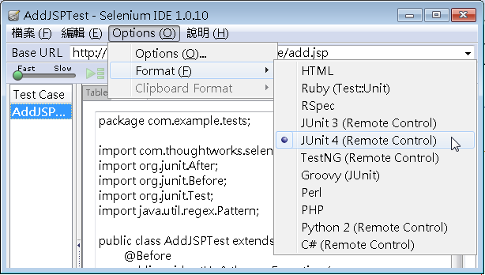

繼 續 使用 Selenium IDE 的內容，Selenium IDE的目的，在於協助測試過程的錄製，錄製出來的內容預設使用HTML儲存，實際上，Selenium IDE只運行在Firefox上，如果你想使用別的瀏覽器，或是以撰寫程式的方式來進行測試，Selenium IDE可以產生幾種程式語言的測試程式：

以 使用 Selenium IDE 中錄製的結果，產生的程式碼如下：
package test.cc.openhome;
import com.thoughtworks.selenium.*;
import org.junit.After;
import org.junit.Before;
import org.junit.Test;
import java.util.regex.Pattern;
public class AddJSPTest extends SeleneseTestCase {
@Before
public void setUp() throws Exception {
selenium = new DefaultSelenium("localhost", 4444,
"*chrome", "http://localhost:8080/BookmarkOnline/");
selenium.start();
}
@Test
public void testAddJSP() throws Exception {
selenium.open("/BookmarkOnline/add.jsp");
selenium.click("//input[@value='送出']");
selenium.waitForPageToLoad("30000");
verifyTrue(selenium.isTextPresent("新增書籤失敗"));
verifyTrue(selenium.isTextPresent("網址不能空白"));
verifyTrue(selenium.isTextPresent("請輸入網頁標題"));
selenium.type("url", "www.javaworld.com.tw");
selenium.click("//input[@value='送出']");
selenium.waitForPageToLoad("30000");
verifyTrue(selenium.isTextPresent("新增書籤失敗"));
verifyTrue(selenium.isTextPresent("請輸入網頁標題"));
selenium.type("url", "www.javaworld.com.tw");
selenium.type("title", "JavaWorld@TW");
selenium.type("category", "程式設計");
selenium.click("//input[@value='送出']");
selenium.waitForPageToLoad("30000");
verifyTrue(selenium.isTextPresent("新增書籤成功"));
verifyTrue(selenium.isTextPresent("http://www.javaworld.com.tw"));
verifyTrue(selenium.isTextPresent("JavaWorld@TW"));
verifyTrue(selenium.isTextPresent("程式設計"));
}
@After
public void tearDown() throws Exception {
selenium.stop();
}
}
如果要執行這個程式，你必須啟動 Selenium Server，Selenium Server是個代理伺服器，可代理你的測試程式操作瀏覽器，並將結果傳送給你的程式，原理可參考 Selenium Remote Control (RC) 中的說明，以指令方式啟動的 話：
java -jar
selenium-server-standalone-2.0b2.jar
你必須有 Selenium Client Drivers，接著就可以直接運行以下的程式，程式中預設"*chrome"是 指 Firefox Chrome URL，啟動Firefox瀏覽器，若想指定Google Chrome、Firefox、Safari、Opera或Internet Explorer等瀏覽器，則可以使用"*googlechrome"、"*firefox"、"*safari"、"*opera"或"*iexplore"， 可支援的瀏覽器可參考 Supported Browsers（因為必須運行一些JavaScript 等指令，所以要注意瀏覽器安全性限制，可能要關閉一些封鎖pop-up的外掛，例 如Internet Explorer下記得關閉「快顯封鎖程式」與「受保護模式」）。
你可以使用程式方式啟動Selenimu Server，另外，Selenium IDE產生的程式碼，預設繼承SeleneseTestCase， 並在每次測試運行前後執行setUp ()、tearDown()，因而每次都重新啟動並關閉瀏覽器，你可以作些修改：
package test.cc.openhome;
import static org.junit.Assert.*;
import com.thoughtworks.selenium.*;
import org.junit.AfterClass;
import org.junit.BeforeClass;
import org.junit.Test;
import org.openqa.selenium.server.SeleniumServer;
public class AddJSPTest {
private static Selenium selenium;
private static SeleniumServer seleniumServer;
@BeforeClass
public static void setUpClass() throws Exception {
// 建立並啟動Selenium Server
seleniumServer = new SeleniumServer();
seleniumServer.start();
// 只啟動一次瀏覽器
selenium = new DefaultSelenium("localhost", 4444,
"*firefox", "http://localhost:8080/BookmarkOnline/");
selenium.start();
}
@AfterClass
public static void tearDownClass() throws Exception {
// 關閉瀏覽器
selenium.stop();
// 關閉Selenium Server
seleniumServer.stop();
}
@Test
public void testAddJSP() throws Exception {
selenium.open("/BookmarkOnline/add.jsp");
selenium.click("//input[@value='送出']");
selenium.waitForPageToLoad("30000");
assertTrue(selenium.isTextPresent("新增書籤失敗"));
assertTrue(selenium.isTextPresent("網址不能空白"));
assertTrue(selenium.isTextPresent("請輸入網頁標題"));
selenium.type("url", "www.javaworld.com.tw");
selenium.click("//input[@value='送出']");
selenium.waitForPageToLoad("30000");
assertTrue(selenium.isTextPresent("新增書籤失敗"));
assertTrue(selenium.isTextPresent("請輸入網頁標題"));
selenium.type("url", "www.javaworld.com.tw");
selenium.type("title", "JavaWorld@TW");
selenium.type("category", "程式設計");
selenium.click("//input[@value='送出']");
selenium.waitForPageToLoad("30000");
assertTrue(selenium.isTextPresent("新增書籤成功"));
assertTrue(selenium.isTextPresent("http://www.javaworld.com.tw"));
assertTrue(selenium.isTextPresent("JavaWorld@TW"));
assertTrue(selenium.isTextPresent("程式設計"));
}
}